ghOSt: Fast & Flexible User-Space Delegation of Linux Scheduling
SOSP ’21
gpu
memory
systems
networking
serving
ghOSt: Fast & Flexible User-Space Delegation of Linux Scheduling
Background & Motivation
Kernel scheduling matters
- Performance
- Fair share
- Priority
- Latency-sensitive: key-value store
- Throughput-oriented: video rendering
- Security
- Two threads from different tenants on different physical cores
- System Stability
- run system daemons periodically
Difficulties
Implementing schedulers is hard
- Programming in kernel
- Complicated synchronization (RCU, atomics, etc.)
- Hard to debug
- Stability
- Maintenance
- Manually port to new kernels or upstream to Linux
- Slow to upgrade production machines (reboot required)
Deploying schedulers is even harder
Deploying changes to scheduling policy requires deploying a new kernel across a large fleet.
- Cloud providers will make frequent changes to fix bugs and tune performance
- not tolerated
Custom scheduler/data plane OS perworkload is impractical

- Need a data plane OS for every app and scheduling policy
- Not feasible in a shared cloud environment
- Far from production
Custom scheduling via eBPF is insufficient
- BPF program has limited expressiveness
- BPF verifier must be able to determine that loops will exit
- limited accessible kernel data structures
- floats are not allowed
- BPF program runs synchronously
- must react quickly to scheduling events
- cannot make decisions later
Different scheduling policies for different applications and platforms
- Need to modify scheduling policy quickly
- New classes of workloads
- low-latency workloads
- throughput-oriented workloads
- Different platforms
- NUMA nodes, AMD CCX or many-cores
- Need to get the upgraded polices onto machines quickly
- New classes of workloads
Offers flexibility in policy only at a per-CPU level
- Linux constains policies to the per-CPU level (per-core level)
- Doesn’t support cross-core or cross-policy scheduling
- Need centralized models
- Work-conserving policies for microsecond-scale workloads
- Need per-socket models
- Per-NUMA-node
- Per-CCX
- Support multiple tenants
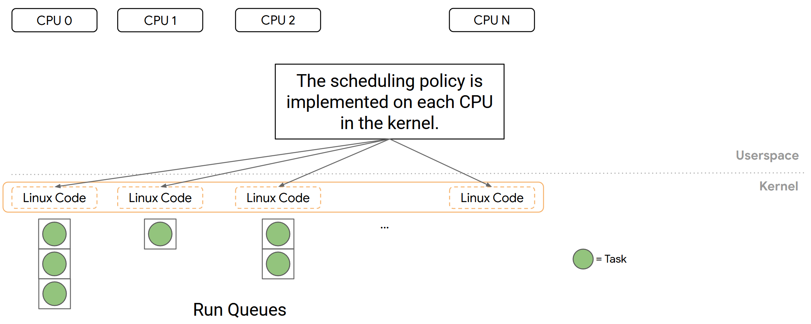
Offers flexibility in policy only at a per-CPU level
- Linux constains policies to the per-CPU level (per-core level)
- Doesn’t support cross-core or cross-policy scheduling
- Need centralized models
- Work-conserving policies for microsecond-scale workloads
- Need per-socket models
- Per-NUMA-node
- Per-CCX
- Support multiple tenants
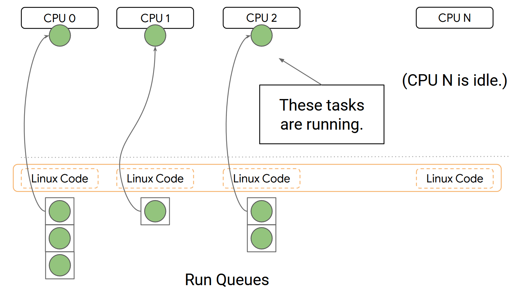
Design Goals
- Easy to implement policies and port across machines
- Optimize policies for a wide variety of targets
- Scheduling decision delegation
- Composition and partitioning
- Non-disruptive updates
Design of ghOSt
- Runs scheduling policies in a userspace process
- Fast and flexible abstractions
- Supports a variety of scheduling policies
- μs-scale workloads
- Co-locate latency-sensitive apps with batch apps
- Multi-tenant workloads
- Centralized, partitioned, and per-CPU policies
- Upgrades are quick – only a process restart required
Overview
- Linux kernel scheduling class
- All scheduling policy runs in a userspace process (agent)
- policies can be written in any language and debugged by standard tools.
- ghOSt exposes thread state to the agents via messages and status word.
- Agents instructs kernel on scheduling decisions via transactions and system calls.
- In case of agents crash, the system falls back to default scheduling.
- The userspace process receives notifications about key events
- E.g., task block, task yield, CPU timer tick, etc.
- Scheduling decisions committed to the kernel via transactions
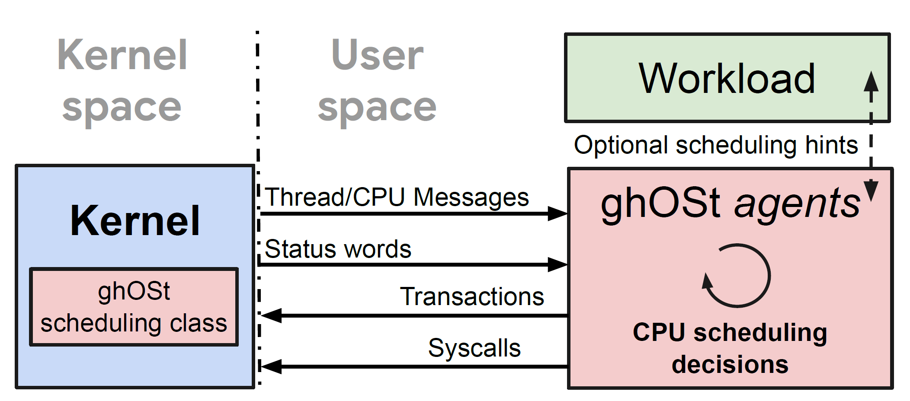
Example 1: per-CPU scheduling
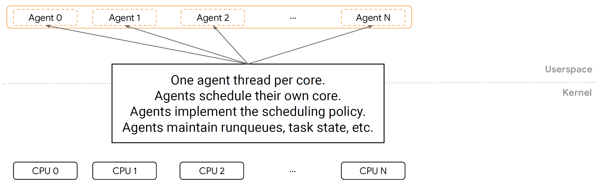
Example 1: per-CPU scheduling
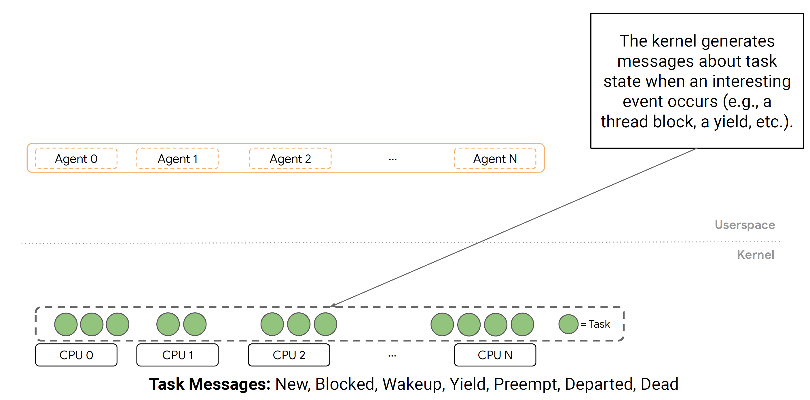
Example 1: per-CPU scheduling
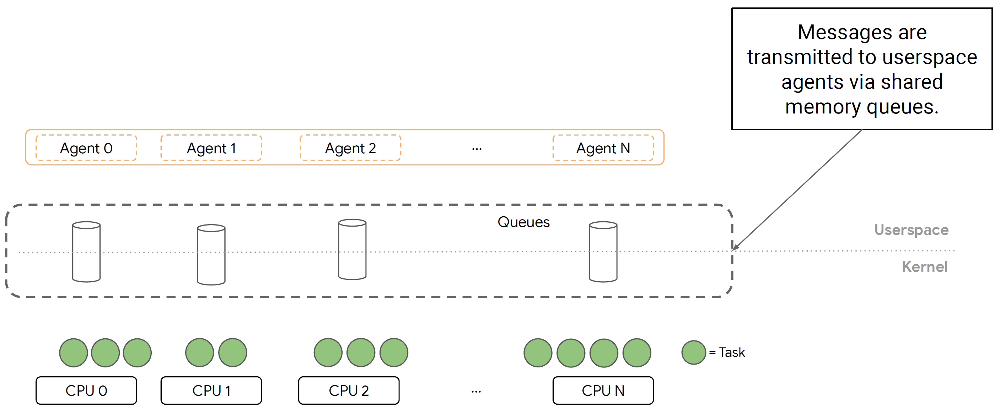
Example 1: per-CPU scheduling
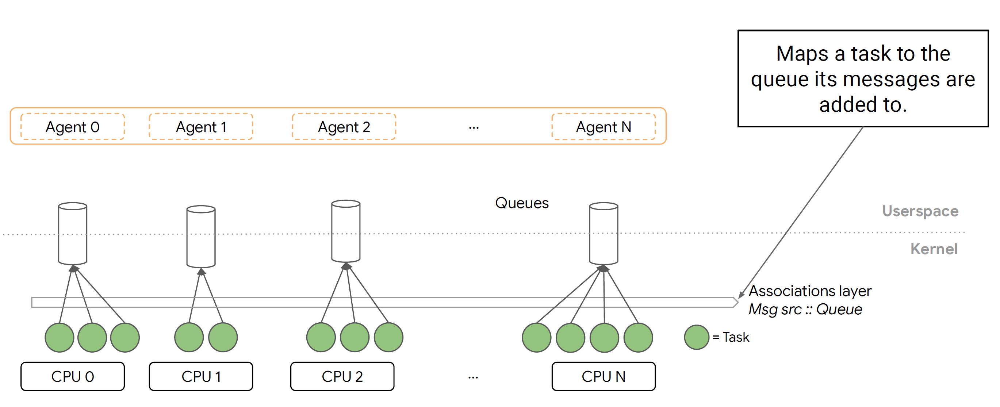
Example 1: per-CPU scheduling
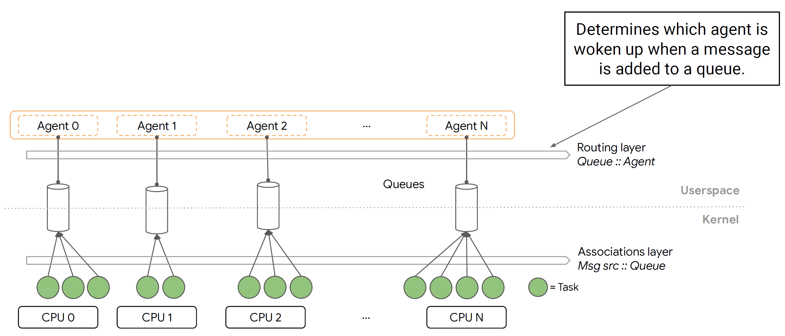
Example 1: per-CPU scheduling
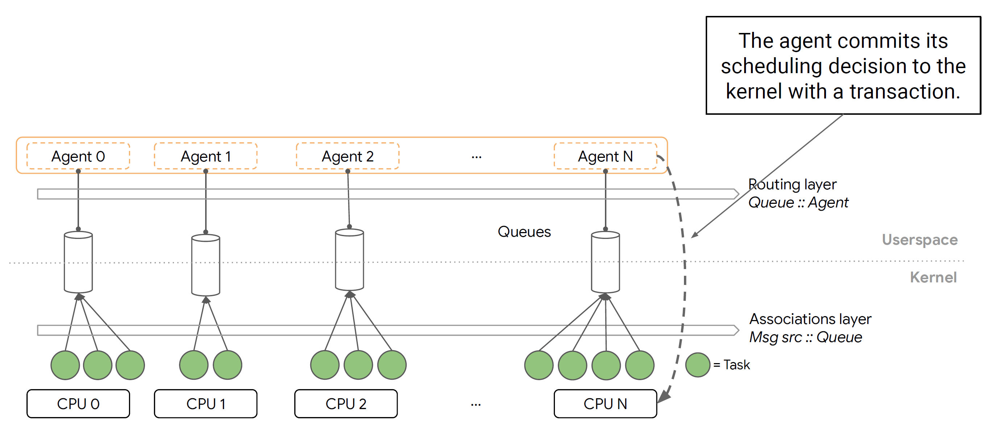
Example 2: centralized scheduling
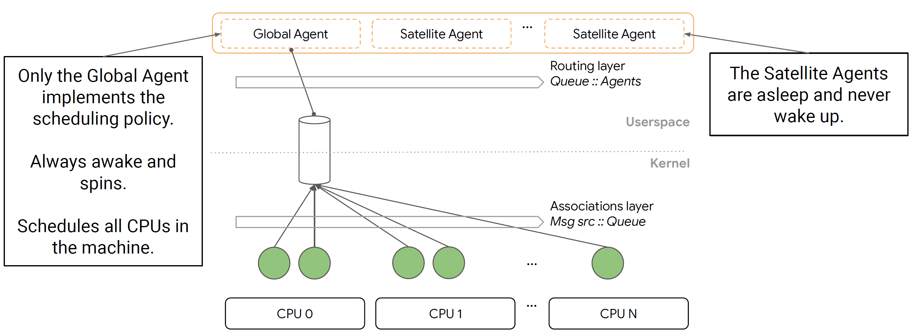
Kernel-to-Agent Communications
Exposing thread state to the agents
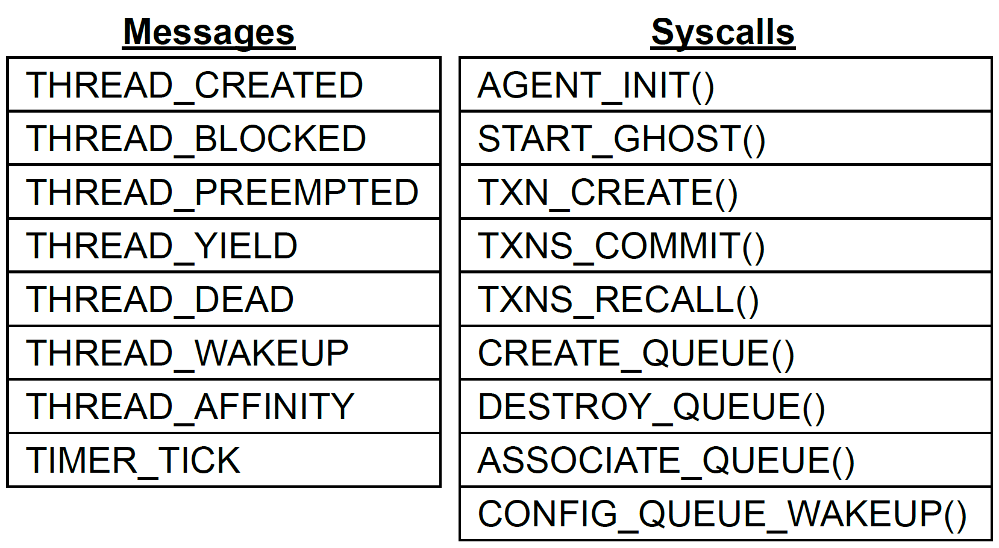
- Messages are delivered to agents via shared memory message queues
- Each thread scheduled under ghOSt is assigned to a single queue
- Messages about the thread’s state changes are sent to that queue
- Thread-to-queue assignment can be changed at any time
- Threads without explicit queue assignment fall back to default queue
Queue-to-agent association
- Queue-to-agent association is flexible
- can be changed any time via ASSOCIATE_QUEUE()
- Multiple message listening mode
- Wake-up: a queue can be configured to wakeup associated agents when messages are produced
- Poll: agents can consistently poll the queue
Synchronizing agents with the kernel
- While the agent is making decision, new messages may arrive which could change the decision.
- Each thread has a sequence number
- When a message of the thread is generated, the sequence number is incremented and included in the message.
- The agent commits its decision to kernel via transactions, which includes the most recent sequence number.
- The kernel compares the sequence number. Outdated transactions fail.
Evaluation
Environment Setup
- 2-socket Intel Xeon Platinum 8173M, 28-cores per socket
- Linux 4.15
- 383GB DRAM
- 100Gbps NIC
Microbenchmark
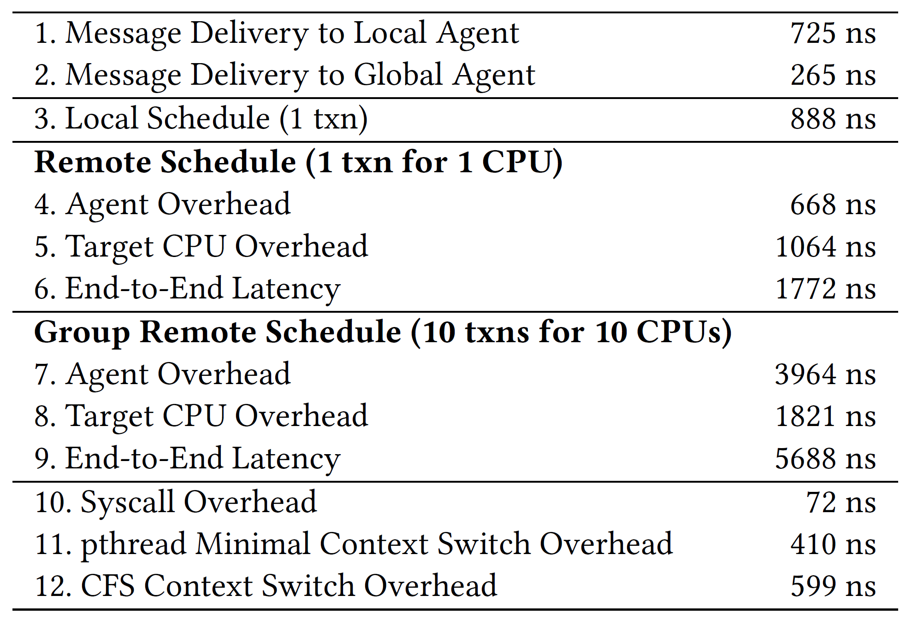
- ghOSt overhead breakdown:
- Message delivery overhead: Line 1-2
- Scheduling overhead
- Local scheduling (per-CPU policy): Line 3
- Remote scheduling (centrialized policy): Line 4-9
- Syscall overhead: Line 10
- original Linux scheduler overhead:
- pthread context switch: Line 11
- CFS context switch: Line 12
End-to-End Latency: Google Snap
- Snap is a packet processing framework:
- One main polling thread that processes network traffic
- Additional worker threads are spawned as needed when traffic increases
- 1 server and 6 clients
- 5 clients send 64KB packets, one client sends 64B packets to the server
- the server replies each a symmetrically sized packet
- 10K packets per second per client
- Benchmarks
- MicroQ: a microsecond-scale read-time linux scheduler
- ghOSt: centralized FIFO scheduling policy
End-to-End Latency: Google Snap
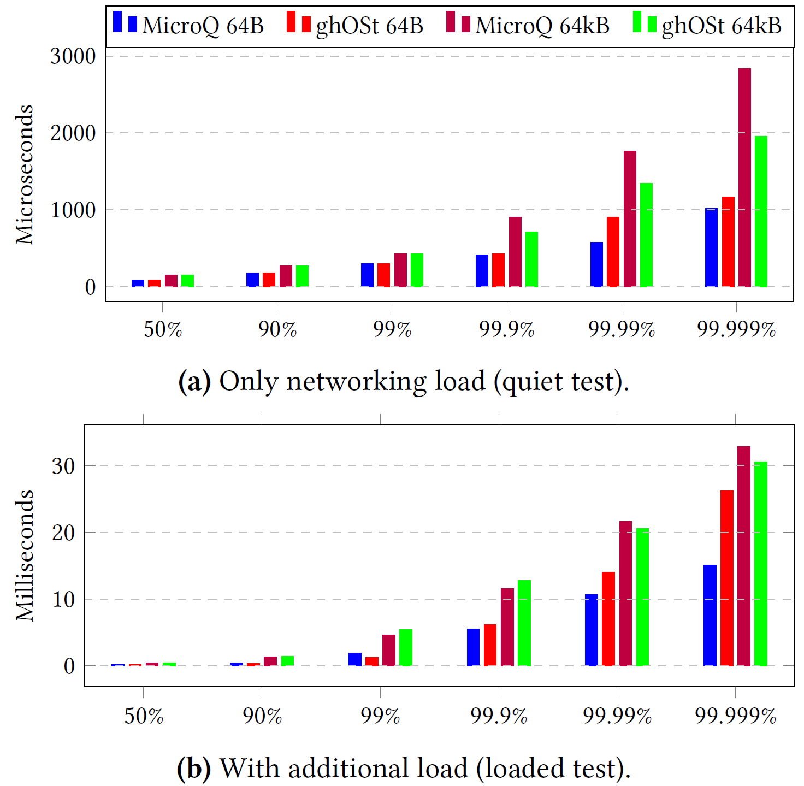